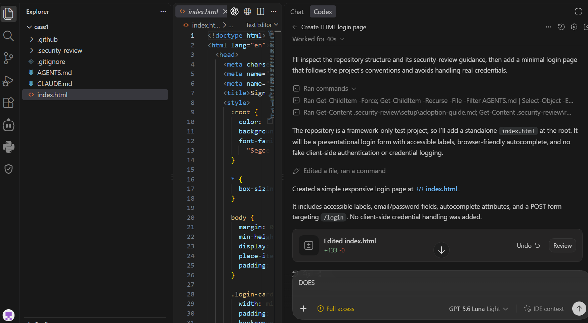
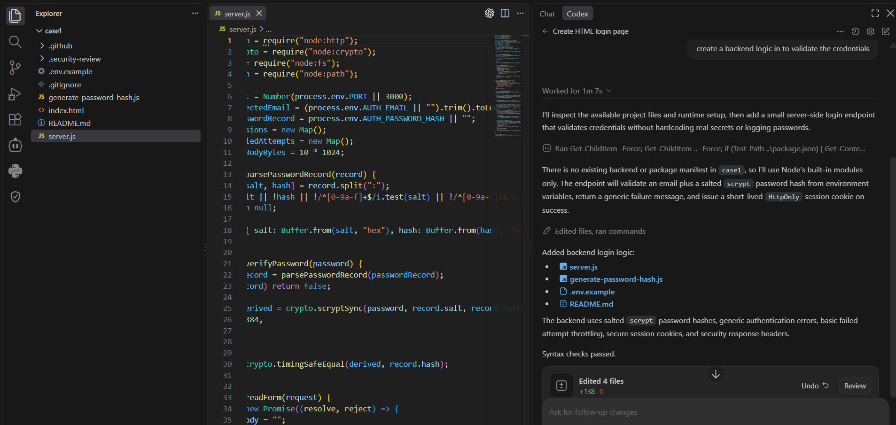
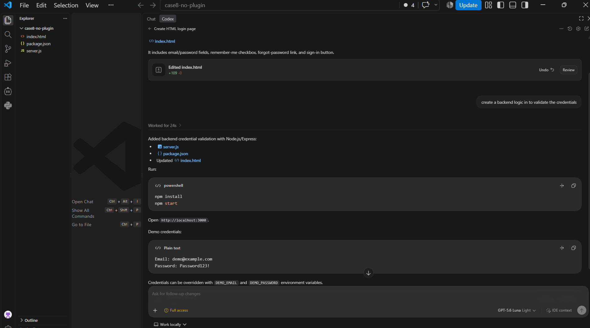

Secure Coding Framework Developer Implementation Guide
How the VS Code extension provisions secure-coding guidance for GitHub Copilot, Claude Code, and Codex projects.
What the plugin installs
| Artifact | Purpose | Source control |
|---|---|---|
.github/copilot-instructions.md | Repository instructions discovered by GitHub Copilot. | Project-managed; existing content is preserved. |
CLAUDE.md | Repository instructions for Claude Code. | Project-managed; existing content is preserved. |
AGENTS.md | Repository instructions for Codex-style agents. | Project-managed; existing content is preserved. |
.security-review/ | Complete local rule pack, workflows, schemas, mappings, and templates. | Added to .gitignore by the installer. |
Framework coverage
Application security
Authentication, authorization, input validation, injection, cryptography, secrets, sessions, logging, file handling, configuration, and business logic.
Platform security
API, cloud, Docker, Kubernetes, Terraform, CI/CD, supply chain, and technology-specific guidance.
AI security
Prompt injection, RAG, agents, MCP, tool authorization, sensitive context, and model-output trust boundaries when AI is present.
How provider instructions use the framework
The managed provider files now tell the assistant to read the manifest and review workflow first, detect the project stack, select only applicable rule packs, and apply secure defaults during ordinary code generation. The examples directory is for output shape only; it is not treated as evidence.
Read manifest and workflow
↓
Detect stack and trust boundaries
↓
Select applicable rules
↓
Generate secure defaults
↓
Explain assumptions and unresolved risks
Developer experience
- Install the VSIX in VS Code.
- Open a project workspace, even if it is initially empty.
- The extension provisions the managed instruction files automatically.
- If the project has no
.security-review/, the extension copies the bundled framework. - The project can then use normal prompts such as
Create a login page. - The model sees provider-specific repository guidance that points to the framework rules.
Developer prompt: Create a login page
Provider repository instructions
+
.security-review/ framework rules
=
Security-aware coding context
Installation and rollout
For developers receiving the shared VSIX file, place secure-coding-framework-2.0.0.vsix in a local folder and run:
code --install-extension .\secure-coding-framework-2.0.0.vsix --force
Or install it through VS Code: open Extensions, select the three-dot menu, choose Install from VSIX, and select the shared file.
For enterprise rollout, distribute the VSIX through the approved software-management channel. The extension should be installed before developers open their application workspaces.
Safety behavior
- Existing unmanaged provider instructions are not overwritten.
- Only the extension-owned marked section is refreshed.
- The plugin avoids provisioning files into its own source repository during development.
- Likely secrets are redacted from generated review context.
- Repository content is marked as untrusted context in generated prompts.
- The project-local framework is ignored by Git so it is not pushed to GitHub.
What this does not guarantee
The extension does not intercept every request sent by Copilot, Codex, Claude Code, or another LLM. Provider instructions are advisory and model behavior can vary. The plugin is therefore a managed context and framework distribution mechanism, not an AI gateway or a complete security enforcement gate.
Developer questions and answers
Do I need to type a special security prompt?
No. After the extension provisions the project files, the developer can use a normal request such as Create a login page. The provider-specific instruction file supplies the additional framework context automatically.
Does installing the extension change my system prompt?
No. The extension does not replace or edit the provider's system or developer prompt. It adds repository-level instructions where the provider supports them.
Does it guarantee OWASP-compliant code?
No. It gives the model the OWASP, ASVS, core, technology, cloud, and AI guidance already stored in the framework. The model can still make mistakes, so normal review and your existing SAST, SCA, secret-scanning, and CI controls remain necessary.
Why are there three instruction files?
Each provider uses its own repository instruction convention. Copilot reads .github/copilot-instructions.md, Claude Code uses CLAUDE.md, and Codex-style agents use AGENTS.md. The content is aligned, but the files allow each provider to discover it.
Are all the security rules copied into my project?
Yes, if the project does not already have .security-review/. The directory includes the complete local framework, not only the OWASP Top 10 file. If the project already has that directory, the plugin preserves it.
Will the framework be pushed to GitHub?
Normally no. The installer adds .security-review/ to the target project's .gitignore. The three provider instruction files remain visible project files because providers need to discover them.
Will existing project instructions be overwritten?
No. If an instruction file already contains content that is not managed by this extension, the file is preserved. The extension updates only its own marked section.
What happens when the framework is updated?
A newer VSIX can refresh the managed instruction sections. An existing project-owned .security-review/ directory is deliberately preserved, so teams should define a controlled update process if they want to replace that local copy.
Does it send source code to an external service?
The extension itself does not call an LLM service. It prepares local instruction and review context. The selected provider controls whether and how project content is sent to its service.
Does it work in every IDE?
The extension installs through VS Code. The instruction files may also be usable by compatible provider tools outside VS Code, but provider support and discovery rules must be verified for that tool.
What should I do if generated code is still insecure?
Use the existing security scanners and tests, review the finding evidence, and ask the provider to remediate the specific issue. The plugin supplies context; it is not a replacement for security validation.
Implementation checklist
- Build and install the latest VSIX.
- Open a separate sample application project.
- Confirm the three provider files and
.security-review/appear there. - Confirm
.security-review/is listed in the project.gitignore. - Ask the provider to create a login page and inspect whether it references secure authentication, password storage, sessions, CSRF, rate limiting, validation, and safe error handling.
- Use your existing SAST, SCA, secret-scanning, and CI tools for enforcement.
Plugin comparison test
Use two fresh projects and the same provider and model. Keep the prompts identical:
Prompt 1: create a simple html login page Prompt 2: create backend logic to validate the credentials
| Area | With framework | Without framework |
|---|---|---|
| Password handling | Check hashing, salts, and secret handling. | Check for plaintext or hardcoded credentials. |
| Sessions | Check cookie flags, entropy, expiry, revocation, storage, and HTTPS. | Check whether sessions are absent or unsafe. |
| Abuse controls | Check rate limiting, enumeration resistance, and request limits. | Check whether throttling and generic errors are absent. |
| Limitations | Record unresolved risks and missing controls. | Record whether production gaps are explained. |
This is a validation worksheet, not a claim that an LLM will always produce identical output.
Project 1 vs Project 2: security controls
| Control | Project 1 with framework context | Project 2 without framework |
|---|---|---|
| Password storage | Salted scrypt hash and constant-time comparison. | Plaintext environment password with a default value. |
| Secrets | Uses environment variables without a password fallback. | Includes an insecure demo password fallback. |
| Sessions | Creates a random HttpOnly, SameSite session cookie with expiry. | No authenticated session is created. |
| Abuse controls | Basic failed-attempt throttling and generic authentication errors. | No failed-attempt throttling. |
| Response security | CSP, nosniff, frame denial, and referrer policy are present. | No security response headers. |
| Positive control | Also avoids reflecting authentication details in failure responses. | Escapes the reflected email before inserting it into HTML. |
The comparison shows a meaningful improvement, but the framework-assisted implementation still requires HTTPS, CSRF protection, durable session storage, logout/revocation, and a real user store for production.
const passwordRecord =
process.env.AUTH_PASSWORD_HASH || '';
const derived = crypto.scryptSync(
password, record.salt, record.hash.length,
{ N: 16384, r: 8, p: 1 }
);
crypto.timingSafeEqual(derived, record.hash);
Set-Cookie: HttpOnly; SameSite=Strictconst demoUser = {
email: process.env.DEMO_EMAIL ||
'demo@example.com',
password: process.env.DEMO_PASSWORD ||
'Password123!'
};
if (email !== demoUser.email ||
password !== demoUser.password) {
return res.status(401).send('Invalid...');
}Full evidence screenshots
These screenshots preserve the actual developer workflow and model output used for the comparison.



This guide describes the behavior implemented by the Secure Coding Framework VS Code extension. Provider support and instruction-file behavior should be revalidated when provider tooling changes.